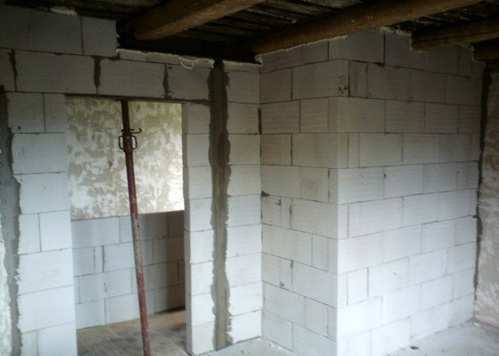
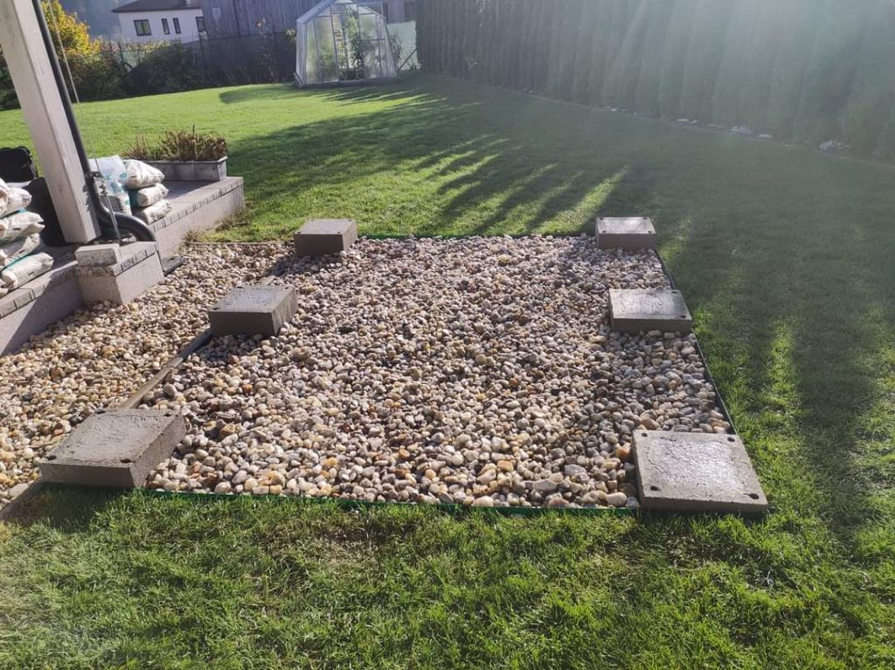

Zedník je – na rozdíl od pomocného dělníka, přidavače – odborně vzdělaný řemeslník v zednictví, tedy stavebním
oboru věnujícímu se zděným konstrukcím stavby. Typickou, nikoli však výhradní činností je pokládání cihel, jejich
spojování maltou a následné omítání. Zedníci se podílejí na stavbách a opravě betonových i cihlových staveb,
jako jsou obytné domy, mosty nebo jiná zařízení z přírodních nebo umělých stavebních materiálů.
Zednické řemeslo je jedno z nejstarších. Zedníci původně používali jako stavební materiál kámen a
byli úzce provázání s kamenictvím, o čemž svědčí i společné cechy. Za patrona zedníků jsou považováni sv. Štěpán a sv. Tomáš

